슬로건 : 나의 AI 여정, 코디세이에서 시작하세요
광고 목적 : 인지 (Awareness) — 비전공자에게 코디세이의 존재와 학습 방식(동료·프로젝트 기반, 장학금)을 알리고 사이트 방문 유도
최종 영상 : Codyssey_GenAI_Ad_16x9.mp4 (1920x1080) / Codyssey_GenAI_Ad_9x16.mp4 (1080x1920)
총 44초 · 6씬 · 이미지(코디세이 COPA 게이트웨이 gpt-image-2), 영상(씬 1·3·5: COPA veo T2V, 씬 2·4·6: 정지 이미지+ffmpeg 패닝/줌), 음성(gpt-4o-mini-tts), BGM(veo 생성 오디오)
| 브랜드 | 코디세이 (Codyssey) — 운영: 이노베이션 아카데미 (과학기술정보통신부·서울특별시·정보통신기획평가원 지원) |
|---|---|
| 정체 | AI·SW 인재 교육 플랫폼. 프랑스 에꼴42 모델 기반의 한국형 교육으로, 강의 위주가 아닌 자기주도·동료학습·프로젝트 기반 학습(PBL)을 중심으로 운영한다. |
| 프로그램 | AI 올인원 (18개월, 개발자·엔지니어 양성) / AI 네이티브 (5개월, 생성형 AI 활용·자동화 중심) |
| 타겟 | AI·SW 분야로 진입하고 싶은 성인 학습자(전공·경력 무관, 성인 또는 고졸 이상 — 2026 AI 네이티브 모집 공고 기준). 광고 주 타깃: 20~30대 비전공자·커리어 전환 희망자. |
| 톤앤매너 | 차분하지만 응원하는 톤. 과장·공포 소구 없이 '시작할 수 있다'는 신뢰감과 가능성. 모험(오디세이) 은유를 쓰는 밝고 깨끗한 일러스트. |
| USP | · 학비·시간 제약 없이 장학금을 받으며 배우는 AI 전문인재 과정 (공식 사이트 문구) · 교수 중심 강의가 아닌 동료학습 + 프로젝트 기반 학습 · 전공·경력 무관 지원 가능 (AI 네이티브 2026 모집 기준) · AI 올인원(18개월)과 AI 네이티브(5개월) 두 트랙 |
| 출처 | https://www.codyssey.kr https://www.syu.ac.kr/4aov https://www.ajunews.com/view/20240930085245816 https://lms.42seoul.kr/en/innovation_academy/business_info/codyssey.html (검색 결과에만 노출, 직접 fetch는 연결 거부로 미확인 — 근거로 단정하지 않음) |
| 사실 확인 한계 | 모집 일정·과정 구성은 변동 가능. 광고에는 일정·금액·취업률 등 미확인 수치를 쓰지 않는다. 에꼴42 기반·동료학습/PBL 특징은 검색 요약(syu.ac.kr, ajunews 등) 근거. |
| 광고 목적 | 인지 (Awareness) — 비전공자에게 코디세이의 존재와 학습 방식(동료·프로젝트 기반, 장학금)을 알리고 사이트 방문 유도 |
|---|---|
| 핵심 메시지(1문장) | 코디세이는 비싼 강의 대신, 동료와 직접 만들며 AI를 배우는 장학금 기반 교육 플랫폼입니다. |
| 슬로건 / CTA | 나의 AI 여정, 코디세이에서 시작하세요 / codyssey.kr 에서 과정 확인하기 |
| 구조 | 기(문제) 씬1 → 승(심화) 씬2 → 전(전환) 씬3 → 결(해결) 씬4·5 → 브랜드/CTA 엔드카드 씬6(마지막 5초) |
| 단계 사이 원칙 | 사내 쿼터(크레딧)가 한정되어 있으므로 이미지는 씬당 최대 2회, 영상은 씬당 최대 2회로 제한. 비용이 큰 영상은 이미지 검수·스토리보드 확정 뒤에만 시도. 편집 도구(ffmpeg)는 컷·자막·색보정·오디오 레벨 용도로만 사용. |
|---|
| 구분 | 최종 사용 도구 | 비교·시도·실패 | 선택 이유 | 대체 도구 |
|---|---|---|---|---|
| 이미지 | 코디세이 COPA 게이트웨이 gpt-image-2 (1536x1024, 씬 6장 + 재생성 2회 = 8회) | 1차·비교: Pollinations(요청 model=flux, 실제 sana). 6씬 나란히 비교는 8장 | 화풍·팔레트·"얼굴 없는 실루엣" 지시 준수율이 높아 앰버 스카프 식별자와 플랫 벡터 화풍이 6씬에 일관됨(로그 verdict). 워터마크 없음, 해상도 1536x1024 | COPA imagen-4, gpt-image-1.5, gemini-2.5-flash-image(미사용), Pollinations |
| 비디오 | COPA veo-3.1-fast T2V(씬 1·5, 8초·720p·24fps·오디오 포함) + veo-3.1(씬 3 채택). 씬 2·4·6은 정지 이미지 + ffmpeg zoompan | 씬 3은 같은 프롬프트로 veo-3.1-fast와 veo-3.1을 모두 생성해 비교(8장). 씬 1·5는 v1→v2 프롬프트 수정(7장). sora-2는 OpenAI가 2026-09-24에 Videos API를 제거해 실패. 키 등록 전에는 veo도 전부 503이었음(8장 도구 접근성 대응). 1차 HF Spaces 4종×3씬은 ZeroGPU 쿼터 실패 | COPA 영상 API는 이미지 입력이 없어 Text-to-Video만 가능. veo는 영상과 오디오를 함께 생성하고, 쿼터 보호를 위해 fast 모델로 시작해 씬 3만 비교용으로 veo-3.1을 추가. 인물 왜곡 위험이 낮은 풍경 씬 1·3·5만 대상 | sora-2(종료), HF Spaces i2v(1차), ffmpeg zoompan(씬 2·4·6 실사용) |
| 오디오(음성) | COPA gpt-4o-mini-tts voice=nova, speed 1.0 | 씬 1 문장으로 nova/shimmer/alloy 3종 비교 후 nova 선택. 1차 gTTS(비교본 보존), edge-tts는 HTTP 403 실패 | speed 1.0에서 6씬 모두 씬 길이 이내(4.4~7.3초)라 gTTS 때처럼 atempo 가속·문장 축약이 필요 없었음. 3종 중 nova 선택(점수 기록 없음, 비교 파일 _voice_cmp 보존) | COPA tts-1-hd, gemini-2.5-flash-tts, gTTS, edge-tts |
| BGM | veo-3.1-fast 생성 오디오: 씬 1 v2 클립의 오디오를 추출(bgm_veo.m4a, 8초)해 1초 크로스페이드로 7회 이어 붙여 44초로 사용, -19dB·내레이션 덕킹·끝 3초 페이드 | 1차 HF MusicGen/Stable Audio Open 실패. 씬 1 v1 오디오는 bgm_veo_v1.m4a로 보존(미채택). 씬 3·5 클립 오디오는 쓰지 않음(-an) | 별도 BGM 모델 호출 없이 영상 호출의 부산물로 청각 AI 요소를 확보(쿼터 절약). 한계: 청취 검수 못 함, volumedetect 평균 -16.9dB·피크 -0.8dB만 확인. 8초 반복이라 반복감이 있을 수 있음 | MusicGen / Stable Audio Open |
| 통합 편집 | ffmpeg 8 + Pillow(자막 PNG) | — | 무료·재현 가능. drawtext 필터가 없어 자막을 PIL 투명 PNG로 렌더링해 overlay | — |
| T2I는 구도·화풍을 확정하는 저비용 단계라 이미지를 먼저 여러 번 검수한다. I2V는 확정 이미지를 움직이게 해 일관성에 가장 유리하지만, COPA 영상 API는 이미지 입력을 받지 않아 이번 라운드에서는 선택할 수 없었다(1차 HF I2V는 쿼터 실패). 그래서 영상은 T2V로 가고, 일관성은 영상 프롬프트에 팔레트 hex·플랫 벡터·얼굴 없는 실루엣·앰버 스카프·카메라 거리를 명시해 맞췄다. 실제 결과: 플랫 벡터 화풍, 네이비·블루·앰버 팔레트 계열, 앰버 스카프, 얼굴 없음은 6개 클립 모두 유지됐다. 그러나 구도와 색은 정지 이미지와 다르게 나왔다(씬 1: 여러 갈래 길 → 한 줄기 길+큰 화살표, 씬 3: 네이비 길 → 앰버 길·크림색 구름, 씬 5: 별·동전이 과다하고 인물이 갈림길을 가림). 프롬프트 수정(v2)은 구름색·식기 형상·인물 크기를 잡았지만 구도 자체는 잡지 못했다. 정지 이미지 그대로 움직여야 한다면 I2V가 필요하고, 이번 선택은 "게이트웨이가 지원하는 방식 안에서 최대한 맞춘 것"이다. |
| seed | 1차 Pollinations: 42 전 씬 고정. 2차 COPA: seed 파라미터 없음(copa.py 인자에 없음) — 모든 프롬프트 끝에 같은 STYLE 문구를 붙여 일관성 확보 |
|---|---|
| 팔레트 | navy #0B1B3F · electric blue #2F6BFF · amber #FFB400(주인공 앰버 스카프 식별자) · teal #19C3B1 · off-white #F5F7FB |
| 2차 STYLE 접미(전 씬 동일) | Strict flat 2D vector illustration, solid color shapes only, no painterly texture, no photorealism, no 3D render, no gradients except smooth sky/background. Palette limited to deep navy #0B1B3F, electric blue #2F6BFF, warm amber #FFB400, off-white #F5F7FB. Any human is a faceless solid-color silhouette with no facial features at all (no eyes, nose, mouth). The single protagonist always wears a bright amber #FFB400 scarf as the identifying marker. Wide cinematic 3:2 composition. Absolutely no text, no letters, no numbers, no logo, no watermark. |
| 1차 style_suffix | minimal flat vector illustration, clean geometric shapes, soft gradient background, wide cinematic composition, deep navy (#0B1B3F) and electric blue (#2F6BFF) with warm amber (#FFB400) accent, off-white (#F5F7FB) highlights, soft rim light, faceless silhouette characters, no text, no letters, no logo, no watermark, 16:9 |
| 생성 규격 | 최종 gpt-image-2 1536x1024(3:2) → 중앙 16:9(1536x864) 크롭 → 1920x1080 업스케일. veo 클립은 8초·720p·16:9 요청, 1280x720 24fps 수신 → 1920x1080 30fps로 정규화. 출력 30fps H.264/AAC. 9:16 은 1080x1920(16:9 중앙 배치 + 블러 배경). 1차 Pollinations는 1024x576 수신, 워터마크 크롭 후 업스케일 |
| 실제로 효과 있던 것 | 1차: 긴 style_suffix는 sana가 거의 무시, 짧은 'flat vector' 선두 프롬프트가 나았음. 2차: gpt-image-2는 같은 긴 STYLE 문구를 그대로 따라 6씬 화풍·스카프가 일관됨. 단, 인물 스케일 지시("몸통 프레임 밖")는 재생성이 필요했음(씬 2) |
| 일관성 한계(정직 기록) | cref/sref·ControlNet 미사용. 씬 5 건물 묘사가 다른 씬보다 정교하고 씬 6 별이 우상단 코너에 치우침(로그 기록). 씬 2는 스카프가 의자에 걸린 소품으로만 등장 |
| 파일 네이밍 | scene{NN}_{kind}_{variant}.{ext} kind = img | motion | vo. 1차 scene01_img_v2.png / scene01_vo.mp3, 2차 scene01_img_gpt.png, 수정본 scene02_img_gpt_v2.png / scene01_vo_gpt.mp3. 영상 scene01_motion.mp4(1차 시도) / scene01_motion_v2.mp4(프롬프트 수정본) / scene03_motion_veo31.mp4(모델 변경), BGM bgm_veo.m4a. 최종 output/Codyssey_GenAI_Ad_{16x9|9x16}.mp4 |
| 목표 메시지 | AI를 배우고 싶지만 어디서부터 시작할지 막막하다. |
|---|---|
| 화면 구성 | 구도: 와이드 쇼트, 인물은 화면 하단 좌측 1/3에 뒷모습 실루엣. 피사체: 앰버 스카프의 실루엣이 갈림길 앞에 서 있음. 배경: 안개 낀 남색 밤하늘과 무수한 빛나는 길·화살표 조각. 텍스트: 없음(하단 자막만 후편집). |
| 내레이션 | 새로운 AI 기술, 어디서부터 배워야 할지 막막하셨나요? |
| 사용 도구·목적 | 영상: 코디세이 COPA 게이트웨이 veo-3.1-fast (Text-to-Video) — 모션 클립(프롬프트로 화풍 맞춤) / 이미지: COPA gpt-image-2 — 키 비주얼(영상 클립과의 일관성 기준) / 음성: COPA gpt-4o-mini-tts nova — 내레이션(실측 6.50초, speed 1.0) / 오디오(BGM): 이 클립의 생성 오디오를 BGM 소스로 사용 |
| 입력 프롬프트(최종 이미지, 원문) | A single faceless silhouette seen from behind, wearing an amber scarf, small figure in the lower-left third, standing at a fork of many glowing blue paths and arrow-like shards in a foggy deep navy night sky. Feeling lost and uncertain. Strict flat 2D vector illustration, solid color shapes only, no painterly texture, no photorealism, no 3D render, no gradients except smooth sky/background. Palette limited to deep navy #0B1B3F, electric blue #2F6BFF, warm amber #FFB400, off-white #F5F7FB. Any human is a faceless solid-color silhouette with no facial features at all (no eyes, nose, mouth). The single protagonist always wears a bright amber #FFB400 scarf as the identifying marker. Wide cinematic 3:2 composition. Absolutely no text, no letters, no numbers, no logo, no watermark. size=1536x1024, request_id=pub-1c440a94b85444d48b3dd12158473e80 |
| 입력 프롬프트(영상, 원문) | Wide shot, very slow dolly-in, camera stays far back. A small faceless silhouette seen from behind in a dark navy coat with an amber scarf gently fluttering, standing in the lower-left third at a fork of many glowing electric-blue (#2F6BFF) winding paths with floating saturated electric-blue arrow shapes, in a foggy deep navy night. All clouds and hills are dark navy and slate-blue shapes with a faint blue rim light; no white, beige, peach or orange clouds. The amber scarf is the only warm color. Arrows pulse softly, the mood is lost and uncertain. Minimal flat vector illustration look, clean geometric shapes, smooth soft gradients, deep navy (#0B1B3F) and electric blue (#2F6BFF) palette with a warm amber (#FFB400) accent and off-white (#F5F7FB) highlights. The protagonist is a faceless dark navy silhouette wearing a flowing amber scarf. No text, no letters, no logos, no watermark, no subtitles. No human speech, no dialogue, no voice-over. Audio: soft ambient piano and synth pad music, no speech, no voice. model=veo-3.1-fast, 8초, 720p, job_id=vjob_cc3b71f8e5bd40a0a2589de5 |
| 출력 결과 요약(영상) | 구름·언덕이 네이비/회청, 앰버 스카프·얼굴 없음·글자 없음 유지. 한계: 정지 이미지의 '여러 갈래 길'이 한 줄기 구불길+위로 향한 큰 화살표로 바뀌었고 길 색이 #2F6BFF보다 밝은 시안. |
| 출력 결과 요약(이미지) | 채택 — 뒷모습 실루엣+앰버 스카프+다수 갈래 길/화살표 조각, 남색·블루 플랫 팔레트 일치, 얼굴 없음, 글자 없음. 1차 Pollinations 대비 갈림길·스카프 모두 반영 |
| 결과 파일명 | assets/video/scene01_motion_v2.mp4 · assets/images/scene01_img_gpt.png · assets/audio/scene01_vo_gpt.mp3. 편집: 편집에서 24→30fps, 8초 중 7초 사용, 채도 0.9·밝기 -0.03 보정, 오디오는 BGM 소스로만 추출 |
| 목표 메시지 | 혼자 하는 학습은 비용과 시간의 벽에 막힌다. |
|---|---|
| 화면 구성 | 구도: 미디엄 쇼트, 책상 위 노트북과 두 손(클로즈업), 얼굴 없음. 피사체: 손이 키보드 위에서 멈춰 있고 옆에 쌓인 강의 카드·동전·모래시계. 배경: 어두운 남색 방, 창가의 차가운 푸른빛. 텍스트: 없음. |
| 내레이션 | 강의는 들었지만, 혼자서는 비싼 학비와 시간이 발목을 잡죠. |
| 사용 도구·목적 | 이미지: COPA gpt-image-2 — 키 비주얼 / 영상: zoompan 좌→우 패닝(ffmpeg, AI 영상 아님 — 인물 왜곡·텍스트 오버레이 위험 때문에 의도적으로 정지 이미지 유지) / 음성: COPA gpt-4o-mini-tts nova — 내레이션(실측 5.52초, speed 1.0) |
| 입력 프롬프트(최종 이미지, 원문) | Medium close-up framed tightly on the desk only: two faceless hands resting still on a laptop keyboard, the person's body cut off above the wrist so no head and no torso are visible. Beside the laptop a stack of course cards, a few coins and an hourglass. Dim navy room with a cold electric-blue window behind. A small amber scarf end hangs over the chair edge as the identifying marker. Strict flat 2D vector illustration, solid color shapes only, no painterly texture, no photorealism, no 3D render, no gradients except smooth sky/background. Palette limited to deep navy #0B1B3F, electric blue #2F6BFF, warm amber #FFB400, off-white #F5F7FB. Any human is a faceless solid-color silhouette with no facial features at all (no eyes, nose, mouth). The single protagonist always wears a bright amber #FFB400 scarf as the identifying marker. Wide cinematic 3:2 composition. Absolutely no text, no letters, no numbers, no logo, no watermark. size=1536x1024, request_id=pub-7dfc3931b339473ebe402dcfad41a912 |
| 출력 결과 요약(이미지) | 채택 — 수정 후: 몸통·머리를 프레임 밖으로 빼 손+노트북+강의카드+동전+모래시계만 남김, 앰버 스카프는 의자 등받이에 걸어 식별자 유지. 콘티 구도와 일치 |
| 결과 파일명 | assets/images/scene02_img_gpt_v2.png · assets/audio/scene02_vo_gpt.mp3 · 모션은 편집 단계 zoompan(별도 모션 파일 없음) |
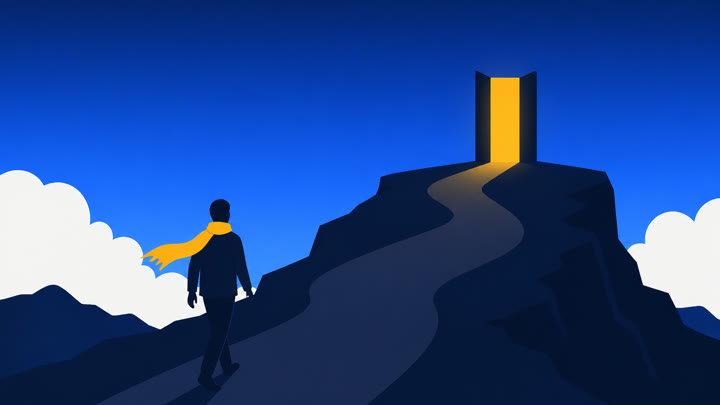
| 목표 메시지 | 코디세이는 강의 대신 동료와 직접 만들며 배우는 길을 연다. |
|---|---|
| 화면 구성 | 구도: 와이드 쇼트, 어둡던 길 끝에서 앰버 빛의 문/포털이 열림. 피사체: 앰버 스카프 실루엣이 빛을 향해 한 걸음 내딛고, 멀리 다른 실루엣 두 개가 손짓. 배경: 남색에서 일렉트릭 블루로 전환되는 하늘. 텍스트: 없음. |
| 내레이션 | 그래서 코디세이는 강의 대신, 직접 만들며 동료와 함께 배우는 길을 엽니다. |
| 사용 도구·목적 | 영상: 코디세이 COPA 게이트웨이 veo-3.1 (Text-to-Video, fast 동일 프롬프트와 비교 후 채택) — 모션 클립(프롬프트로 화풍 맞춤) / 이미지: COPA gpt-image-2 — 키 비주얼(영상 클립과의 일관성 기준) / 음성: COPA gpt-4o-mini-tts nova — 내레이션(실측 6.26초, speed 1.0) |
| 입력 프롬프트(최종 이미지, 원문) | Wide shot: one faceless silhouette wearing an amber scarf, alone in the foreground, stepping along a dark path toward a large glowing amber doorway opening at the path's end. Sky shifts from deep navy to electric blue. Exactly one human figure in the whole image. Hopeful turning point. Strict flat 2D vector illustration, solid color shapes only, no painterly texture, no photorealism, no 3D render, no gradients except smooth sky/background. Palette limited to deep navy #0B1B3F, electric blue #2F6BFF, warm amber #FFB400, off-white #F5F7FB. Any human is a faceless solid-color silhouette with no facial features at all (no eyes, nose, mouth). The single protagonist always wears a bright amber #FFB400 scarf as the identifying marker. Wide cinematic 3:2 composition. Absolutely no text, no letters, no numbers, no logo, no watermark. size=1536x1024, request_id=pub-c198ee9b90614c4193ef40f5b3eaadc9 |
| 입력 프롬프트(영상, 원문) | Wide shot, slow dolly-in toward the light. A faceless silhouette in a dark navy suit with an amber scarf blowing in the wind walks up a winding path on a dark navy rocky hilltop toward a tall glowing amber doorway at the summit, warm amber light spreading along the path, sky shifting from deep navy to bright electric blue, flat white clouds drifting. Hopeful turning point. Minimal flat vector illustration look, clean geometric shapes, smooth soft gradients, deep navy (#0B1B3F) and electric blue (#2F6BFF) palette with a warm amber (#FFB400) accent and off-white (#F5F7FB) highlights. The protagonist is a faceless dark navy silhouette wearing a flowing amber scarf. No text, no letters, no logos, no watermark, no subtitles. No human speech, no dialogue, no voice-over. Audio: gentle wind only, no music, no speech. model=veo-3.1, 8초, 720p, job_id=vjob_05d34ad334d14442a77f648c |
| 출력 결과 요약(영상) | 앰버 길과 빛나는 문, 뒷모습 실루엣+스카프, 글자 없음. 한계: 정지 이미지의 네이비 길·흰 구름이 앰버 길·크림색 구름으로 바뀌고, 문이 정상 위 구조물이 아니라 바위 입구 모양이며 7초 무렵 문이 화면을 채움. |
| 출력 결과 요약(이미지) | 채택 — 인물 1명(앰버 스카프)이 어두운 길을 따라 언덕 위 앰버 문으로 향함, 남색→블루 하늘. 1차의 인물 2명·스카프 없음 문제 해결. 동료 실루엣 2명 손짓은 의도적으로 제외 |
| 결과 파일명 | assets/video/scene03_motion_veo31.mp4 · assets/images/scene03_img_gpt.png · assets/audio/scene03_vo_gpt.mp3. 편집: 8초 전체 사용(편집에서 24→30fps만), 보정 없음. 씬당 2회 한도를 fast 1회+veo-3.1 1회로 사용 |
| 목표 메시지 | 프로젝트 속에서 서로 묻고 가르치며, 전공·경력과 상관없이 시작할 수 있다. |
|---|---|
| 화면 구성 | 구도: 미디엄~와이드 쇼트, 둥근 테이블에 모인 4명의 얼굴 없는 실루엣이 하나의 화면(코드·블록)을 함께 가리킴. 피사체: 앰버 스카프 실루엣 포함. 배경: 밝은 오프화이트·블루 스튜디오, 떠다니는 기하학 블록. 텍스트: 없음. |
| 내레이션 | 프로젝트 속에서 서로 묻고 가르치며, 전공도 경력도 상관없이 시작할 수 있어요. |
| 사용 도구·목적 | 이미지: COPA gpt-image-2 — 키 비주얼 / 영상: zoompan 줌아웃(ffmpeg, AI 영상 아님 — 인물 왜곡·텍스트 오버레이 위험 때문에 의도적으로 정지 이미지 유지) / 음성: COPA gpt-4o-mini-tts nova — 내레이션(실측 7.32초, speed 1.0) |
| 입력 프롬프트(최종 이미지, 원문) | Medium wide shot of four faceless solid-color silhouettes (blank smooth heads, no facial features, flat vector shapes) around a round table, all pointing together at a glowing screen of floating geometric code blocks. One of them wears an amber scarf. Bright off-white and blue collaborative studio, floating geometric blocks, warm friendly mood. Strict flat 2D vector illustration, solid color shapes only, no painterly texture, no photorealism, no 3D render, no gradients except smooth sky/background. Palette limited to deep navy #0B1B3F, electric blue #2F6BFF, warm amber #FFB400, off-white #F5F7FB. Any human is a faceless solid-color silhouette with no facial features at all (no eyes, nose, mouth). The single protagonist always wears a bright amber #FFB400 scarf as the identifying marker. Wide cinematic 3:2 composition. Absolutely no text, no letters, no numbers, no logo, no watermark. size=1536x1024, request_id=pub-b167d32dcd1f476f8cbf5963aa28ab13 |
| 출력 결과 요약(이미지) | 채택 — 둥근 테이블에 4명 실루엣이 떠 있는 코드 블록 화면을 함께 가리킴, 앰버 스카프 1명, 밝은 오프화이트·블루 스튜디오. 얼굴 이목구비 없음(1차 v3의 사실적 얼굴 해결) |
| 결과 파일명 | assets/images/scene04_img_gpt.png · assets/audio/scene04_vo_gpt.mp3 · 모션은 편집 단계 zoompan(별도 모션 파일 없음) |
| 목표 메시지 | 장학금으로 학비 부담을 덜고, 5개월 AI 네이티브와 18개월 AI 올인원 중 나에게 맞는 과정을 고를 수 있다. |
|---|---|
| 화면 구성 | 구도: 와이드 쇼트, 하나의 출발점에서 두 갈래 길이 뻗음(짧은 길=5개월, 긴 길=18개월 은유). 피사체: 앰버 스카프 실루엣이 갈림길에서 앞을 바라봄(뒷모습), 길 위에 장학금을 상징하는 앰버 별/동전 조각. 배경: 맑은 블루 하늘과 멀리 보이는 도시·캠퍼스 실루엣. 텍스트: 후편집으로 '5개월 AI 네이티브', '18개월 AI 올인원' 라벨 오버레이. |
| 내레이션 | 장학금으로 학비 부담은 덜고, 나에게 맞는 AI 과정을 고르세요. |
| 사용 도구·목적 | 영상: 코디세이 COPA 게이트웨이 veo-3.1-fast (Text-to-Video) — 모션 클립(프롬프트로 화풍 맞춤) / 이미지: COPA gpt-image-2 — 키 비주얼(영상 클립과의 일관성 기준) / 음성: COPA gpt-4o-mini-tts nova — 내레이션(실측 5.76초, speed 1.0) |
| 입력 프롬프트(최종 이미지, 원문) | Wide shot: a faceless silhouette wearing an amber scarf seen from behind at the start of two diverging glowing roads, one short and one long, small amber stars and coins floating along the paths, clear bright blue sky with a distant campus and city skyline silhouette, confident hopeful mood. Strict flat 2D vector illustration, solid color shapes only, no painterly texture, no photorealism, no 3D render, no gradients except smooth sky/background. Palette limited to deep navy #0B1B3F, electric blue #2F6BFF, warm amber #FFB400, off-white #F5F7FB. Any human is a faceless solid-color silhouette with no facial features at all (no eyes, nose, mouth). The single protagonist always wears a bright amber #FFB400 scarf as the identifying marker. Wide cinematic 3:2 composition. Absolutely no text, no letters, no numbers, no logo, no watermark. size=1536x1024, request_id=pub-761355937f404e89af4c7565c9465db9 |
| 입력 프롬프트(영상, 원문) | Wide shot from behind, camera locked with only a very slow subtle push-in, never close to the character. A small faceless silhouette with an amber scarf fluttering stands at the bottom center where one road splits into two separate glowing off-white ribbon-like winding roads in a Y shape, no lane markings, no asphalt. The left road leads to a small distant campus building, the right road leads to a city skyline. Small amber stars and gold coins float and twinkle upward along both roads in a clear bright electric blue sky with deep navy hills. No forks, knives, spoons or cutlery shapes anywhere. Confident and hopeful. Minimal flat vector illustration look, clean geometric shapes, smooth soft gradients, deep navy (#0B1B3F) and electric blue (#2F6BFF) palette with a warm amber (#FFB400) accent and off-white (#F5F7FB) highlights. The protagonist is a faceless dark navy silhouette wearing a flowing amber scarf. No text, no letters, no logos, no watermark, no subtitles. No human speech, no dialogue, no voice-over. Audio: light airy ambience, no speech. model=veo-3.1-fast, 8초, 720p, job_id=vjob_38f45d16c91748c1a8909bf8 |
| 출력 결과 요약(영상) | 하단 중앙에서 Y자로 갈라지는 두 길, 좌 캠퍼스·우 도시, 별·동전 반짝임, 식기 형상 없음, 글자 없음. 한계: 길이 크림색, 별·동전이 정지 이미지보다 훨씬 많고 인물이 갈림길 시작점을 가림. |
| 출력 결과 요약(이미지) | 채택 — 앰버 스카프 뒷모습이 두 갈래 길(좌 캠퍼스·우 도시)에 서 있고 앰버 별·동전 조각 배치. 한계: 건물 디테일이 다른 씬보다 정교하고 길이 흰색이라 5개월/18개월 길이 차이는 약함 |
| 결과 파일명 | assets/video/scene05_motion_v2.mp4 · assets/images/scene05_img_gpt.png · assets/audio/scene05_vo_gpt.mp3. 편집: 편집에서 24→30fps, 8초 뒤 마지막 프레임 1초 유지로 9초 채움, 보정 없음 |
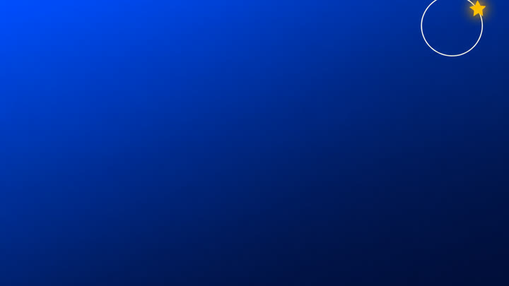
| 목표 메시지 | 코디세이에서 나의 AI 여정을 시작하자. |
|---|---|
| 화면 구성 | 구도: 중앙 정렬 엔드카드. 피사체: 일렉트릭 블루 그라디언트 위에 앰버 별/궤도 아이콘 하나(로고 모사 금지, 일반 기하 도형). 배경: 단색에 가까운 미니멀 그라디언트. 텍스트: 후편집으로 '코디세이 Codyssey' + 슬로건 '나의 AI 여정, 코디세이에서 시작하세요' + CTA 'codyssey.kr'. |
| 내레이션 | 코디세이. 지금, 나의 AI 여정을 시작하세요. |
| 사용 도구·목적 | 이미지: COPA gpt-image-2 — 키 비주얼 / 영상: zoompan 줌인(ffmpeg, AI 영상 아님 — 인물 왜곡·텍스트 오버레이 위험 때문에 의도적으로 정지 이미지 유지) / 음성: COPA gpt-4o-mini-tts nova — 내레이션(실측 4.42초, speed 1.0) |
| 입력 프롬프트(최종 이미지, 원문) | Minimal end card background: smooth electric blue to deep navy gradient. In the upper-right corner a clearly visible amber star with a soft glow orbiting a thin off-white circle ring, the star about 4 percent of image width. The entire center and lower two-thirds are completely empty open space for text overlay. No people. Strict flat 2D vector illustration, solid color shapes only, no painterly texture, no photorealism, no 3D render, no gradients except smooth sky/background. Palette limited to deep navy #0B1B3F, electric blue #2F6BFF, warm amber #FFB400, off-white #F5F7FB. Any human is a faceless solid-color silhouette with no facial features at all (no eyes, nose, mouth). The single protagonist always wears a bright amber #FFB400 scarf as the identifying marker. Wide cinematic 3:2 composition. Absolutely no text, no letters, no numbers, no logo, no watermark. size=1536x1024, request_id=pub-0ed3f558c7c347dbbde9e1f6274961af |
| 출력 결과 요약(이미지) | 채택 — 별 크기를 키우고 흰 궤도 링과 글로우 추가, 중앙·하단 2/3 비어 있음. 한계: 별이 우상단 코너에 치우쳐 있고 단순 그라디언트 |
| 결과 파일명 | assets/images/scene06_img_gpt_v2.png · assets/audio/scene06_vo_gpt.mp3 · 모션은 편집 단계 zoompan(별도 모션 파일 없음) |
1280x720 H.264 24fps + AAC 48kHz 스테레오 8초. 프레임(1/4/7초) 검수: 글자·로고 없음, 얼굴 없음(뒷모습), 앰버 스카프 유지. 어긋남: 구름이 정지 이미지의 네이비가 아닌 베이지/피치색, 화살표·길이 시안 계열로 밝아져 '짙은 네이비 밤' 팔레트에서 벗어나고 7초에 인물이 화면을 크게 채움 → v2로 수정.
v1 대비 프롬프트 수정(구름·언덕은 어두운 네이비/슬레이트 + 옅은 블루 림라이트, 흰/베이지/피치/주황 구름 금지, 화살표는 채도 높은 electric blue #2F6BFF, 앰버 스카프만 유일한 따뜻한 색, 인물은 좌하단에 작게·카메라는 멀리). 결과: 구름·언덕이 네이비/회청색으로 정리되고 인물이 작게 유지됨, 글자·얼굴 없음. 길은 여전히 시안에 가까워 정지 이미지의 #2F6BFF보다 밝음(잔여 편차). 피크 -0.8dB로 클리핑 직전이라 편집 단계에서 레벨 조정 필요.
변경. 전: 구름·화살표 색 지정 없음(STYLE 접미의 팔레트 문장만), 'foggy deep navy night with soft rounded cloud banks' → 후: 모든 구름·언덕은 어두운 네이비/슬레이트, 흰·베이지·피치·주황 구름 금지, 화살표 #2F6BFF, 앰버는 스카프만, 인물 작게(좌하단 1/3), camera stays far back
이유. v1에서 '구름'이라는 단어의 모델 기본값(밝은 크림색 구름)이 팔레트 문장보다 우선해 정지 이미지와 색감이 어긋남. 색을 명사 단위로 직접 지정하고 금지색을 명시
결과. 구름·언덕 색과 인물 크기는 의도대로 정리됐다. 구도는 정지 이미지와 달라졌고(갈래 길 → 한 줄기 길) 이는 프롬프트로 잡지 못했다. 씬당 2회 한도라 v3는 만들지 않았고, 편집에서 채도·밝기만 소폭 낮췄다.
1280x720 H.264 24fps + AAC 8초. 글자·로고 없음, 얼굴 없음. 어긋남: '두 갈래 off-white 길'이 차선 있는 넓은 단일 도로로 생성되어 갈림길 구도 소실, 화면 우하단에 포크 모양 오브젝트가 생성됨(식기 형상 아티팩트), 인물이 7초에 화면 대부분을 가림, 바닥이 베이지/주황 톤 → v2로 수정.
v1 대비 프롬프트 수정. 결과: 하단 중앙에서 Y자로 갈라지는 두 개의 off-white 길, 좌 캠퍼스 건물·우 도시 스카이라인, 별·코인 반짝임 유지, 식기 형상 없음, 글자·얼굴 없음. 잔여 편차: 길 바닥이 크림/베이지 톤이고 인물 발 근처에 작은 앰버 막대 1개가 보임. 오디오는 매우 조용함(평균 -35.8dB)으로 BGM 대신 앰비언스 용도.
변경. 전: 'stands at the fork of two glowing off-white roads' (도로 형태 서술 없음), 카메라 'slow dolly-in' → 후: 'one road splits into two separate glowing off-white ribbon-like winding roads in a Y shape, no lane markings, no asphalt', 'No forks, knives, spoons or cutlery shapes', 카메라 'locked, only a very slow subtle push-in, never close to the character'
이유. v1에서 fork(갈림길)라는 단어가 포크 식기 형상으로 오해석되고 road가 차선 있는 아스팔트 도로로 해석됨. 도로 형상을 Y자 리본으로 구체화하고 식기·차선을 부정 지시, 돌리인이 인물을 과하게 키우는 문제는 카메라를 고정에 가깝게 변경
결과. 식기 형상이 사라지고 Y자 갈림길이 성립했다. 잔여: 길이 크림색, 별·동전 과다, 인물이 갈림길 시작점을 가림.
판정: 불합격(재생성) — 손·노트북·책·동전·모래시계 모두 있으나 콘티(손 클로즈업)와 달리 거대한 상반신/머리 실루엣이 화면 절반을 차지, 다른 씬과 인물 스케일 불일치
판정: 채택 — 수정 후: 몸통·머리를 프레임 밖으로 빼 손+노트북+강의카드+동전+모래시계만 남김, 앰버 스카프는 의자 등받이에 걸어 식별자 유지. 콘티 구도와 일치
수정 이유·결과. 1차는 상반신 실루엣이 화면 절반을 차지해 콘티(손 클로즈업)·다른 씬의 인물 스케일과 어긋났고, 얼굴 없는 거대한 머리 덩어리가 어색함. 손 중심 구도로 '막힌 상태'를 소품(모래시계·동전)으로 전달. 변경: 프롬프트를 'body cut off above the wrist, no head and no torso visible'로 바꾸고 인물 전체 대신 손+책상 소품만 프레임에 담도록 구도를 지정. 앰버 스카프는 의자 등받이로 이동. 결과: 콘티 구도와 일치, 이후 씬 인물 스케일과 정합.
판정: 불합격(재생성) — 중앙 비어 텍스트 배치는 좋으나 앰버 별이 우상단에 너무 작아(약 2%) 모티프로 읽히지 않음
판정: 채택 — 별 크기를 키우고 흰 궤도 링과 글로우 추가, 중앙·하단 2/3 비어 있음. 한계: 별이 우상단 코너에 치우쳐 있고 단순 그라디언트
수정 이유·결과. 엔드카드의 앰버 별이 약 2%로 너무 작아 모티프로 읽히지 않았다. 프롬프트에 '별 크기 약 4%, 글로우, 흰 궤도 링'을 명시해 재생성했고 중앙·하단 2/3 여백(텍스트 영역)은 유지됐다. 한계: 별이 우상단 코너에 치우침.
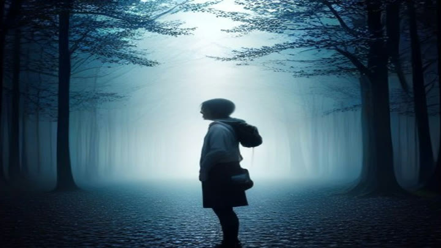
판정: 불합격 — 수정 전: 얼굴 옆모습이 보이는 사실적 인물+숲, 화풍·팔레트 불일치, 갈림길·앰버 식별자 없음, 팔레트 이탈(청회색 실사풍)
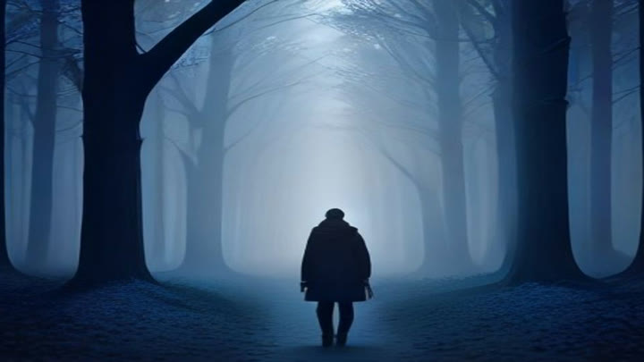
판정: 채택 — 수정 후: 뒷모습 실루엣+안개 낀 남색 숲길, 얼굴 비노출·남색/블루 톤 통일·글자 없음. 단 플랫 벡터가 아닌 회화풍, 앰버 스카프·갈림길은 미반영
수정 이유·결과. v1은 'a person feeling lost, AI learning, digital art' 로 피사체·구도·팔레트·텍스트 제약이 모두 없어 얼굴이 보이는 사실적 인물과 청회색 실사풍이 나왔다. v2는 ① 얼굴 없는 뒷모습 실루엣 ② style_suffix+hex 팔레트 ③ no text ④ wide shot+위치 지정을 추가했다. 결과: 얼굴 비노출, 남색/블루 톤 통일, 글자 없음으로 개선. 한계: 회화풍이고 앰버 스카프·갈림길은 반영되지 않았다. 이 한계는 2차 gpt-image-2 씬 1에서 해소됨(8장 비교).
판정: 채택 — 수정 후: 뒷모습 실루엣+안개 낀 남색 숲길, 얼굴 비노출·남색/블루 톤 통일·글자 없음. 단 플랫 벡터가 아닌 회화풍, 앰버 스카프·갈림길은 미반영
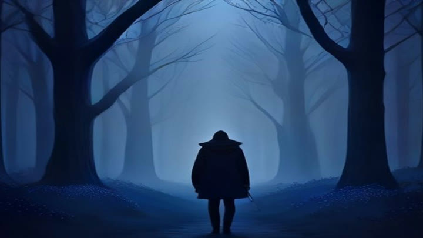
판정: 보류 — 'flat vector'를 앞세운 3차: 더 어두운 남색으로 톤은 맞지만 여전히 회화풍·스카프 없음, v2 대비 개선 미미(최대 3회 소진)
수정 이유·결과. 'flat vector'를 앞세운 짧은 프롬프트로 3차 시도. 톤은 더 어두운 남색이었으나 회화풍·스카프 없음이라 v2 대비 개선이 미미해 v2 유지.
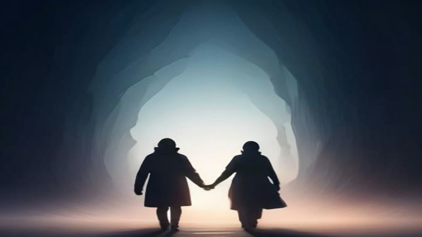
판정: 불합격 — 두 실루엣이 손잡고 터널로 걸어가는 사실적 이미지, 앰버 문 없음, 전환(문 열림) 메시지 약함
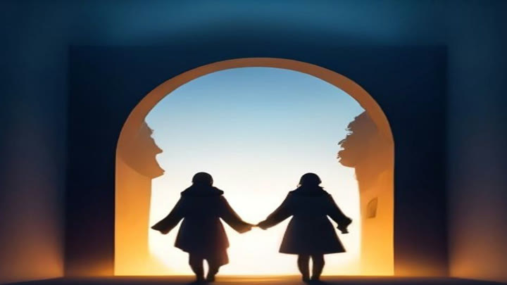
판정: 채택 — 앰버 아치 문+남색→블루 하늘, 어두운 길에서 빛으로 향하는 전환 구도 성립. 인물이 2명이며 손잡음(스카프 없음)
수정 이유·결과. 긴 style_suffix 프롬프트는 sana가 무시해 사실적인 터널 이미지가 나왔다. 'flat vector illustration'을 맨 앞에 두고 짧게 줄여 앰버 문과 남색→블루 하늘 구도가 성립했다. 인물은 2명이 손잡은 형태(스카프 없음).
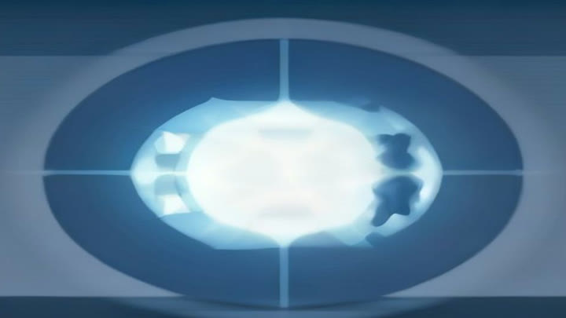
판정: 불합격 — 프롬프트 과다로 사람 없이 추상 타원 도형만 생성, 협업 장면 아님
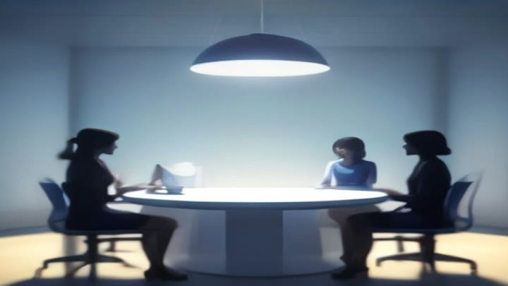
판정: 채택(한계) — 둥근 테이블에 3명이 앉아 협업하는 장면 성립, 블루 톤 일치. 단 인물이 사실적·흐릿한 얼굴로 faceless 원칙 미달, 4명 미충족(3회 소진)
수정 이유·결과. v1은 사람 없는 추상 타원, v2는 추상 도형으로 퇴행. v3에서 'four people silhouettes sitting around a round table'로 명시해 협업 장면이 성립했으나 인물이 사실적·흐릿해 faceless 원칙 미달, 3명.
수정 후: 뒷모습 실루엣+안개 낀 남색 숲길, 얼굴 비노출·남색/블루 톤 통일·글자 없음. 단 플랫 벡터가 아닌 회화풍, 앰버 스카프·갈림길은 미반영
뒷모습 실루엣+앰버 스카프+다수 갈래 길/화살표 조각, 남색·블루 플랫 팔레트 일치, 얼굴 없음, 글자 없음. 1차 Pollinations 대비 갈림길·스카프 모두 반영
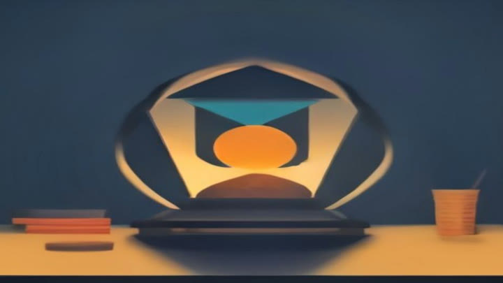
플랫 기하 스타일+남색/앰버 팔레트로 톤 일치, 책더미·동전컵·모래시계 모티프 존재. 손·키보드는 추상화됨
수정 후: 몸통·머리를 프레임 밖으로 빼 손+노트북+강의카드+동전+모래시계만 남김, 앰버 스카프는 의자 등받이에 걸어 식별자 유지. 콘티 구도와 일치
앰버 아치 문+남색→블루 하늘, 어두운 길에서 빛으로 향하는 전환 구도 성립. 인물이 2명이며 손잡음(스카프 없음)
인물 1명(앰버 스카프)이 어두운 길을 따라 언덕 위 앰버 문으로 향함, 남색→블루 하늘. 1차의 인물 2명·스카프 없음 문제 해결. 동료 실루엣 2명 손짓은 의도적으로 제외
둥근 테이블에 3명이 앉아 협업하는 장면 성립, 블루 톤 일치. 단 인물이 사실적·흐릿한 얼굴로 faceless 원칙 미달, 4명 미충족(3회 소진)
둥근 테이블에 4명 실루엣이 떠 있는 코드 블록 화면을 함께 가리킴, 앰버 스카프 1명, 밝은 오프화이트·블루 스튜디오. 얼굴 이목구비 없음(1차 v3의 사실적 얼굴 해결)
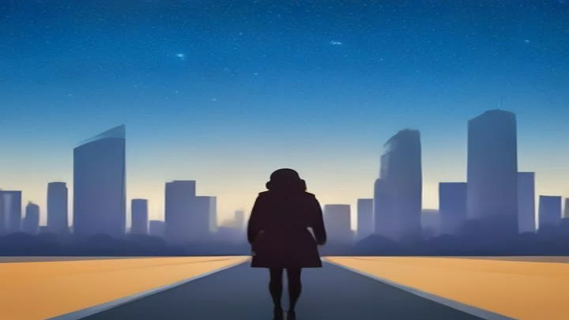
플랫 톤의 블루 하늘+도시 실루엣+앰버 길 양옆, 뒷모습 인물 중앙. 두 갈래 길은 좌우 앰버 노면으로 암시, 별 조각 약함
앰버 스카프 뒷모습이 두 갈래 길(좌 캠퍼스·우 도시)에 서 있고 앰버 별·동전 조각 배치. 한계: 건물 디테일이 다른 씬보다 정교하고 길이 흰색이라 5개월/18개월 길이 차이는 약함
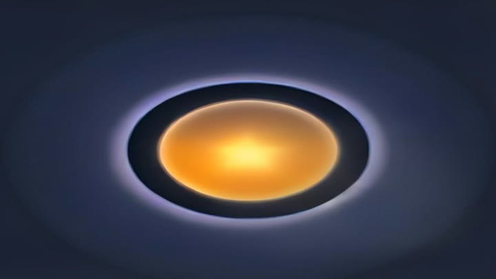
남색 그라디언트 위 앰버 구체+궤도 링, 브랜드 팔레트 일치. 중앙이 비지는 않아 텍스트는 상/하단 배치 필요
별 크기를 키우고 흰 궤도 링과 글로우 추가, 중앙·하단 2/3 비어 있음. 한계: 별이 우상단 코너에 치우쳐 있고 단순 그라디언트
차이 요약(로그 기준). 1차는 앰버 스카프·갈림길이 반영되지 않고 씬 1 회화풍, 씬 4 사실적 인물이었다. gpt-image-2는 6씬 모두 같은 STYLE 문구로 플랫 벡터·팔레트·얼굴 없는 실루엣·앰버 스카프가 일관되고 워터마크가 없다. 대가로 씬 2·6 재생성이 필요했다(씬당 최대 2회 규칙 내).
길이 앰버/황금색(정지 이미지는 네이비), 문이 정상 위가 아니라 바위 동굴 입구처럼 생성, 하늘 하단이 청록색. 오디오 평균 -24.3dB.
길이 앰버인 점은 같음. 시작 구도가 더 넓어 문이 바위 정상에 있는 정지 이미지에 조금 더 가까움. 다만 돌리인이 진행되며 7초 무렵 문이 화면을 채움(두 모델 공통). 오디오 평균 -34.7dB로 약 10dB 조용해 '바람만' 지시에 더 부합.
차이 요약(실측). 소요 시간은 fast 64초 vs veo-3.1 65초지만 4건을 동시에 제출하고 10초 간격으로 폴링해 차이를 측정할 수 없다. 색 편차(앰버 길·크림 구름)는 두 모델 모두 같아 모델 교체로 풀리지 않았고, 구도 시작점과 오디오 레벨에서만 차이가 보였다. 표본은 1씬 1회씩이라 일반화하지 않는다. veo vs sora는 비교하지 못했다: sora-2는 OpenAI가 2026-09-24에 Videos API를 제거해 실패했다.
| 단계 | 상황 | 대응·결과 |
|---|---|---|
| 1. HF 쿼터 (1차) | HF Space 4종 × 씬 3개 = 12회가 ZeroGPU 익명 쿼터 초과로 실패(토큰 필요) | 코디세이 COPA 게이트웨이로 전환하고, 영상은 정지 이미지 + zoompan으로 대체(미션 허용 크레딧 부족 전략) |
| 2. COPA 영상 503 | veo-3.1-fast·veo-3.1을 씬 프롬프트와 최소 프롬프트(8초·4초)로 호출해도 전부 HTTP 503 media_provider_unavailable, job 생성 전 거절(COPA 로그의 503은 18건이나 오류 행에 모델 필드가 없어 모델별 집계가 안 된다. `video_log.json`에 기록한 veo 호출은 7회). 같은 시점 imagen-4-fast·gemini-2.5-flash-tts도 503 | 모델·프롬프트·길이를 바꿔도 같은 결과여서 프롬프트가 아니라 provider 측 문제로 판단하고 호출 반복을 멈춤(쿼터 보호). 이 구간 동안 zoompan 완성본을 먼저 만들어 일정 유지 |
| 3. 원인과 해결 | 원인은 QA 기관에 Google provider 키가 등록되지 않은 것이었다. 키 등록 후 veo-3.1-fast 4초 테스트(job vjob_98d442595cfe4d5cb389803f)가 완료·다운로드까지 성공(1280x720 H.264 + AAC) | 그 뒤 씬 1·3·5 생성 및 v2 수정을 진행(씬당 2회 한도 준수). imagen-4-fast·gemini TTS는 대체 도구라 키 등록 후 재호출하지 않았다(같은 원인이었는지 미검증) |
| 4. sora-2 종료 | 1차 HTTP 400(resolution은 1280x720|720x1280만 허용)을 고친 뒤 HTTP 503 media_provider_error. OpenAI가 2026-09-24에 Videos API를 제거해 provider 처리 실패 | 키 등록과 무관한 영구 실패로 판단, 재시도 안 함. veo-3.1로 대체 비교(위) |
| 영역 | 문제 | 대응·결과 |
|---|---|---|
| 영상(2차) | COPA 로그 기준 영상 22건 중 성공 6(veo-3.1-fast 5 + veo-3.1 1), 실패 16(veo 503 11, sora-2 400 1·503 4). 성공 클립의 어긋남은 7장·6장 카드 참조 | 실패는 키 등록 전 veo 503과 sora-2 종료. 성공 클립은 씬 1·3·5에 사용, 씬 2·4·6은 정지 이미지 + zoompan 유지 |
| 영상(1차) | HF Space 4종 × 씬 3개 = 12회 ZeroGPU 쿼터 실패 | COPA로 도구 전환(위 도구 접근성 대응) |
| 이미지(1차) | Pollinations 익명 호출 간헐 HTTP 402, 워터마크, 1024x576 수신, model 파라미터 무시(실제 sana) | COPA gpt-image-2로 교체해 해소(1차 파일은 비교본으로 보존) |
| 이미지(2차) | 씬 2 상반신 과대(스케일 불일치), 씬 6 별 너무 작음 | 각 1회 재생성(gpt_v2)으로 해결 |
| 음성 | 1차 edge-tts 3회 HTTP 403, gTTS는 atempo 1.3으로도 씬 5 초과해 문장 축약 | COPA gpt-4o-mini-tts로 교체. speed 1.0으로 6씬 모두 씬 길이 이내(씬 5 축약 문장은 그대로 유지) |
| BGM | 1차 HF MusicGen/Stable Audio Open 실패. 8초 BGM을 stream_loop로 그대로 반복하면 이음새가 끊기는 문제(assemble.sh 버그) | veo 생성 오디오(씬 1 v2 클립)를 bgm_veo.m4a로 추출하고 1초 acrossfade 7회로 50초를 만든 뒤 44초로 잘라 -19dB·내레이션 덕킹·끝 3초 페이드. 효과음은 없음. 청취 검수는 못 하고 수치(volumedetect)만 확인 |
| 편집(assemble.sh) | 영상 경로 버그: sceneNN_motion.mp4만 찾아 video_log.json 의 final 클립(v2·veo31)이 쓰이지 않음 | final 맵을 읽도록 수정. 씬 1 클립만 eq(brightness -0.03, saturation 0.9)로 보정(이웃 네이비 씬 2보다 떠 보임), 씬 3·5는 이웃 씬의 중간 밝기라 보정 안 함 |
| 립싱크 | 미시도 | 미달성 |
| 파일명 | 길이 | 해상도 | fps | 코덱 | 크기 |
|---|---|---|---|---|---|
| output/Codyssey_GenAI_Ad_16x9.mp4 | 44.0초 | 1920x1080 | 30/1 | H264 / AAC 48000Hz 1ch | 24.5MB |
| output/Codyssey_GenAI_Ad_9x16.mp4 | 44.0초 | 1080x1920 | 30/1 | H264 / AAC 48000Hz 1ch | 14.5MB |
값은 ffprobe 실측. 씬 길이 7 + 7 + 8 + 8 + 9 + 5 = 44초(30~60초 범위). 마지막 씬 6(5초)에 'CODYSSEY' 로고 텍스트·슬로건·CTA(codyssey.kr) 엔드카드. 9:16 버전은 16:9 영상을 중앙에 두고 블러 확대 배경을 채운 파생본(보너스: 화면 비율 2종).
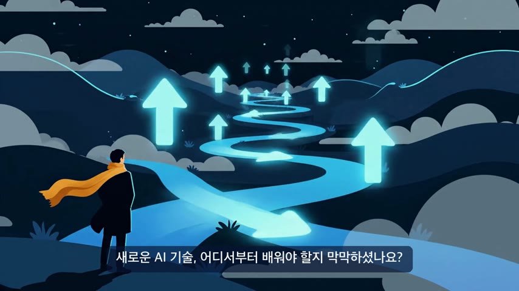
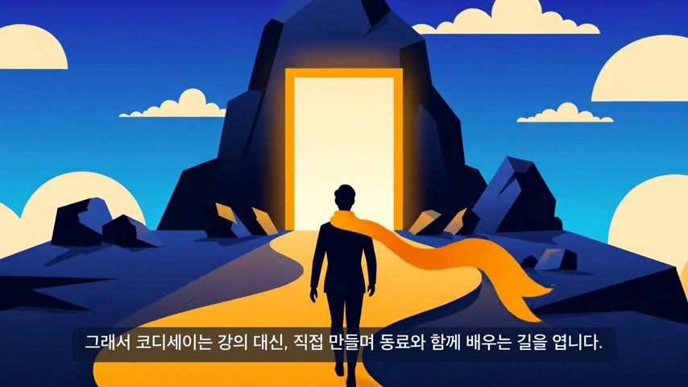
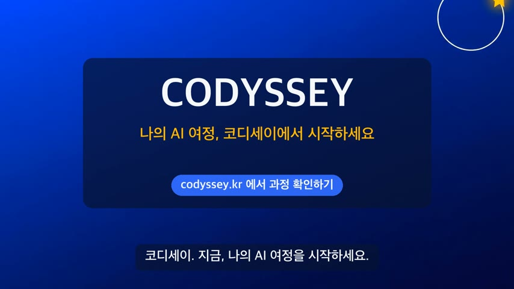
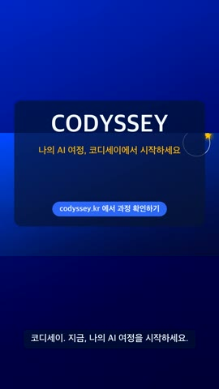
최종 영상 프레임 캡처(16:9 3초·18초·34초·42초 / 9:16 40초).